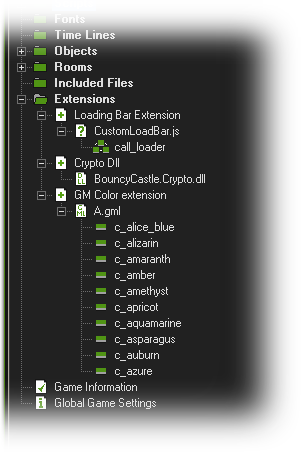
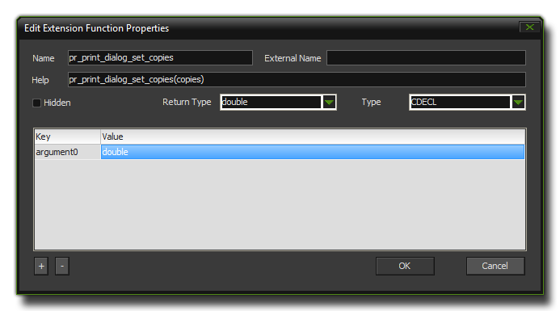
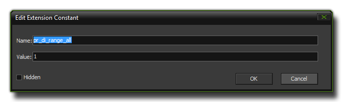

Using Extensions
This section details how to use pre-made
extensions in GameMaker: Studio.
As you can see from the following screen, GameMaker:
Studio can use various types of extension:  The type of extension that you use
will very much depend on the target platform - the list below shows
what each target requires:
- All targets - GML extensions. These are extensions made
using the GameMaker Language (GML) and are compatible with all
target platforms.
- Windows (Standard) - You can use windows DLL files
(Dynamic Link Libraries), except in those games destined for the
Steam Workshop (which prohibits their use).
- Mac OSX - The mac OSX target can use the standard DyLib
files for extensions.
- HTML5 - This platform can use JavaScript extensions.
- Android/Fire - This platform requires extension written in
Java or an Android Framework SDK.
- iOS - Extensions for this platform are written in
Objective C and require a *.mm and a *.h file, or if using any
Frameworks, a pre-compiled *.a native file.
The extensions resource tree follows the format of
Extension >>> Included/Dummy File
>>> Functions and Constants and after you have
added an extension you should double click on the
included/dummy file that accompanies it to bring up the
Extension File Properties Dialogue where you can select the
target platform to which it should be associated:  You can select no
targets (the extension will not be used) or one or more depending
on what type of file it is and the support for it from the
available platforms. Please note that this selection can also be
linked to change through the use of Configurations.
You can select no
targets (the extension will not be used) or one or more depending
on what type of file it is and the support for it from the
available platforms. Please note that this selection can also be
linked to change through the use of Configurations.
Functions

The icon on the left is the Function icon and it shows us
that the extension we are using has a function that can be called
using GML from an object or a script in our game. These functions
can take arguments, return values and act just like any other GML
function, only they use the extension to do the work and not
GameMaker: Studio. You can right-click on a function and
select Properties (or simply double click on it) and you
will get the function properties window which looks like this:
 The Name
is the name of the function in GML, and the External Name is
the name of the function as the external SDK or file sees it. This
part cannot be left blank, and must be filled in correctly, even if
the function name is the same as the Name you have supplied
previously. Below that is the Help section, where you would
put in the correct syntax for the function which will then be shown
in the script and code windows at the bottom of the screen. The
Return Type is what the function returns, either a double
(number) or a string (text) and if you are using a dll, you will
also get a Type section which defines the calling convention
used. Finally you have a list of the arguments that the function
takes and whether they are doubles or strings.
Note that at the bottom you have a checkbox labelled "Variable
length arguments". If the extension function is to have any
optional arguments (ie: if you can provide 4 or 5 or 6 arguments)
then you should tick this option.
Constants
An extension can also contain Constants, which are
basically named values you can use rather than having to type the
same text or numbers every time you wish to have a certain value.
For example, the GML constant c_blue is a constant for the
value $0048ff and is certainly much easier to remember than the
hexadecimal value! If you right-click on a constant and select
Properties (or simply double click on it), the following
window comes up: 
Here you can simply change the name of the constant (be aware that
this may affect how the extension works) and the value that it
represents. Note that you can mark the Hidden check-box to
have the constant excluded from the intellisense of the code
editor, meaning that it will not be highlighted nor shown in the
constants list from the Scripts drop down menu. This does
not affect how the game runs, however, and the constant will still
be recognised as such when the game is run.
Using Extension Functions And Constants
Once you have installed your extension, you can use the
functions and constants for it just as you would the built in
functions and constants used in the GameMaker Language. If your
game is cross-platform (for example, it is designed to run on both
Windows and Android targets), then you should do an OS check before
calling extension specific functions to prevent issues, for
example:
switch(os_type)
{
case os_android:
call_android_extension_function(x,
y, z);
break;
case os_windows:
call_windows_extension_function(x,
y, z);
break;
}
Note that for different platforms your extensions can share
function names, so if you have two extensions to (for example) pop
up a message for Windows and for Android, both extensions can share
the same function name as long as they are both set to export only
to their respective platforms.
© Copyright YoYo Games Ltd. 2018 All Rights Reserved